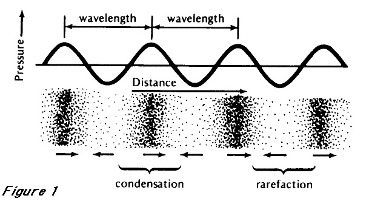
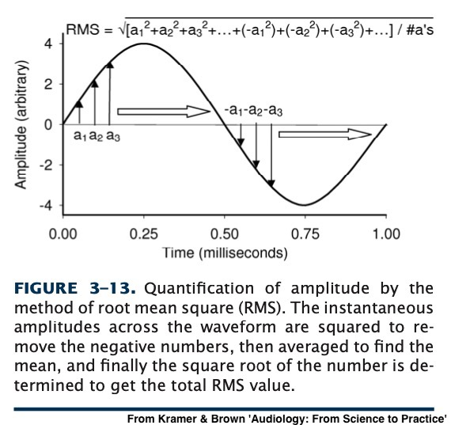
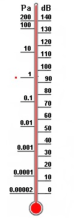
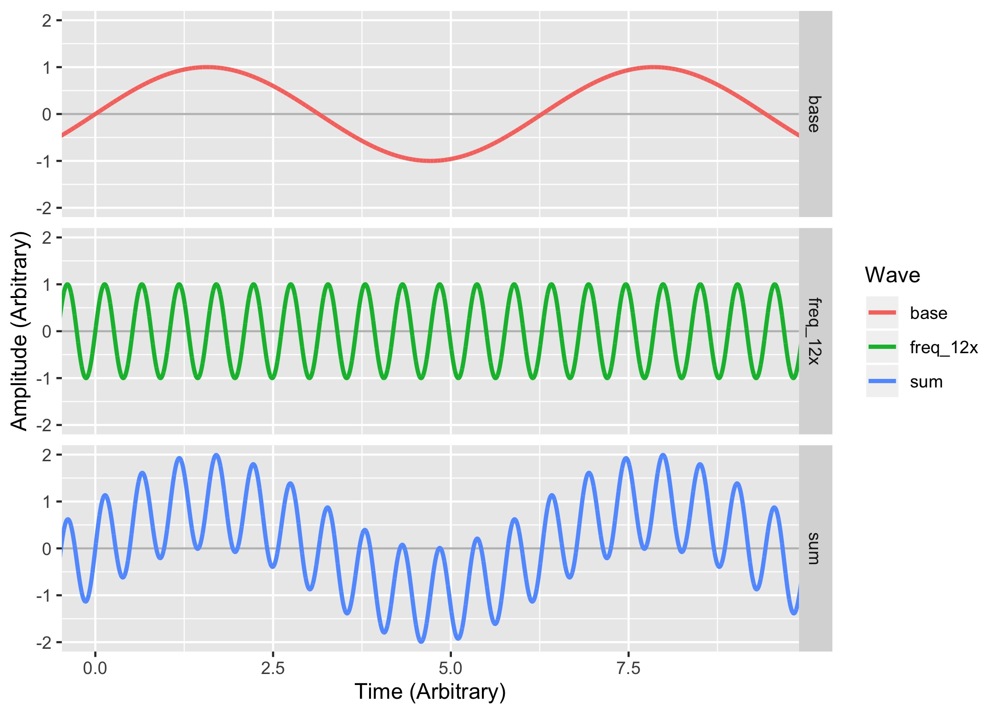
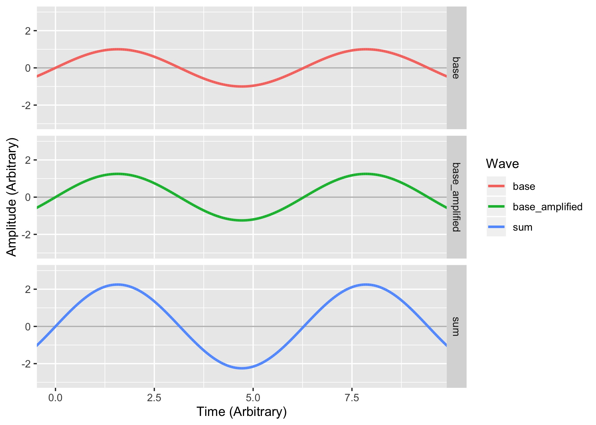
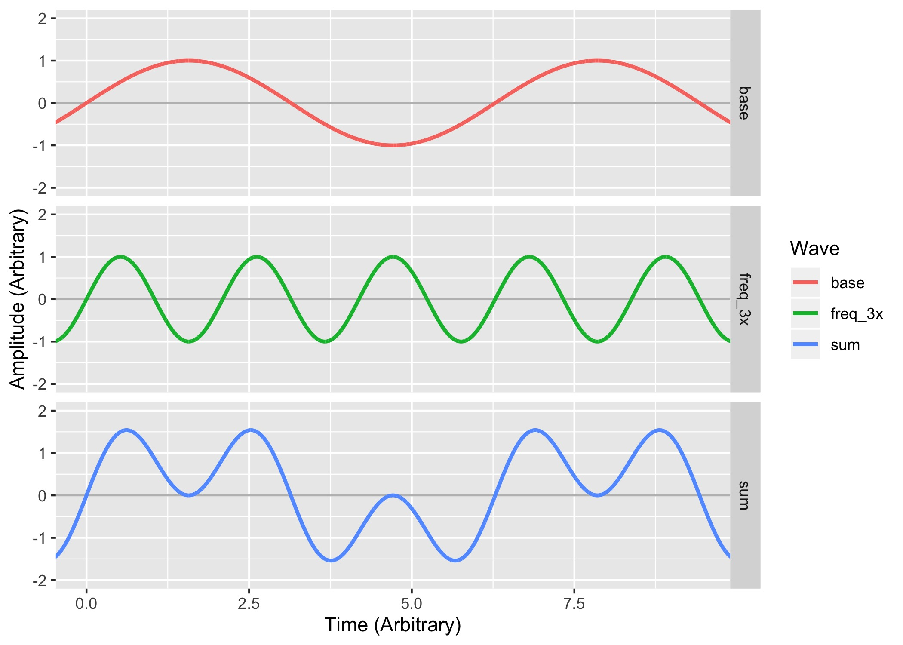
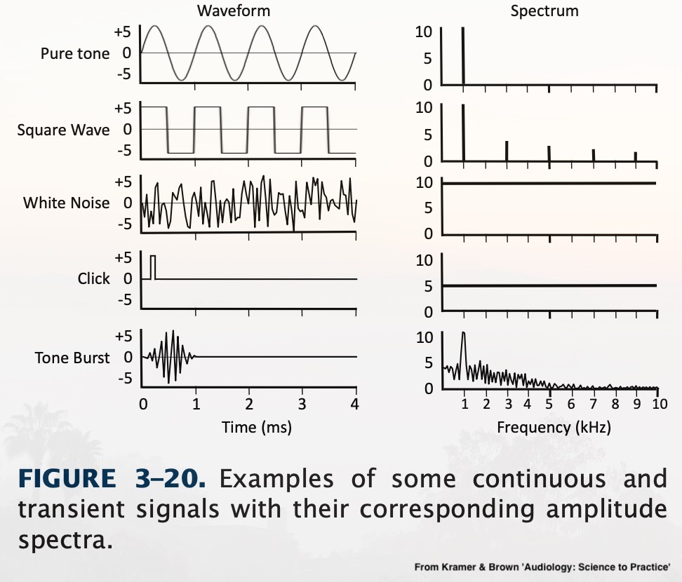

What are the properties of sound?
How can we visualize them?
How do we think about amplitude?
What are complex sounds like?
What is ‘phase’?
Why do Fourier analysis?

Duration
Amplitude
Frequency
Period
Wavelength
How far can the wave travel in a single cycle?
What is the physical distance between peaks?
Phase
We talk about sounds in Milliseconds
1 second (s) = 1000 milliseconds (ms)
Half a second (0.5 s) = 500 milliseconds (ms)
One Quarter second (0.25 s) = 250 ms
1 meter = 1000 millimeters
Duration is kind of boring for this class
What is the difference in pressure between compressions and rarefactions?
We talk about Amplitude in Decibels
We’ll get there soon!

Loudness is the perceptual correlate of amplitude
Generally, when amplitude goes up, so does perceived loudness
It’s super complicated!
Why is dropping a small book quieter than dropping a large one?
How does a car muffler work?
Why can high amplitude sound be damaging and shatter windows?


“How many times does the sound cycle in one second?”
Measured in ‘Hertz’ (Hz), also known as ‘Cycles per second’
‘How many periods can fit in one second?’
Pitch is the perceptual correlate of frequency
Generally, when frequency goes up, so does perceived pitch
It’s complicated!
How fast is it moving?
How often per second does it cycle?

Meters per second / Cycles per second
You then get meters per cycle!
λ = Wavelength in Meters
c = Speed of Sound in Air (343 m/s for this class)
f = Frequency in Hz
Why does a double-bass play lower notes than a violin?
Why do subwoofers need to be bigger?
Why do you hear your neighbors’ bass, but not their treble?

All sounds have amplitude, duration, periods, frequencies, and wavelengths
Many of these things are related to one another
These properties have real consequences for how sound actually works!
Let’s think about amplitude a bit more…


Eliminates asymmetry between up and down
Takes the mean amplitude for the sound overall!
This captures the fact that sounds often vary in amplitude!

Moving the medium damps sound independently of this
Vertical differences in air temperature can ‘bend’ sound up and down
Distant sounds are quieter
You don’t feel the pressure bursts from distant fireworks
There is a ‘safe distance’ from an explosion

Anything’s safe for hearing if you’re far enough away
So, it’s critical to give amplitudes with a distance
“20 Pascal at 1 meter”
“… measured at 90dB at 2 meters from the source”
“Less than 50dB at the property boundary”
Pascal - Newtons per square meter
Where a newton is the force required to move a kilogram 1 meter per second per second
Nothing really is
Quietest places on Earth (anechoic chambers) are ~1.9x10-6 Pascal
The quietest 1kHz sound we can hear is 2.00×10−5 Pascal
We’re humans, so we’re choosing the human audibility threshold as ‘zero’
The Planck Pressure?
The highest possible force in the smallest possible area
4.63309*10113 Pascal
In Earth’s atmosphere, the loudest possible waves are around 1.01x105 (101000) Pascal
Humans experience pain in the 200 Pascal Range
Humans experience long term hearing damage > 0.36 Pascal
200 Pascal highest tolerable sound with pain
63 Pascal for a trumpet half a meter away
20 Pascal can cause instant hearing damage
2 Pascal for a jackhammer a meter away
0.36 Pascal causes hearing damage over long term exposure
0.02 Pascal for a home TV a meter away
0.002 for conversation
0.00002 Pascal lowest detectable sound by humans

Most of the scale is used for ‘too damned loud’
Any time you’re using 0.00002, you’re going to make mistakes
Decibels are logarithmic
We’ll use dB SPL (Sound Pressure Level)
We use a reference value of 0.00002 Pascal
dB = 20*log10(Pascal/0.00002)
log10 is NOT the same thing as log or ln!
This will mess up your homeworks!

140dB highest tolerable sound with pain
130dB for a trumpet half a meter away
120dB can cause hearing damage instantly
100dB for a jackhammer a meter away
85dB causes hearing damage over long term exposure
60dB for a home TV a meter away
20dB for conversation
0dB lowest detectable sound by humans
-20dB Anechoic Chamber Quiet
Remember, 0 is our threshold for hearing!
180+dB can break the TM and/or dislocate the ossicles
Sounds over 132dB can rip the organ of corti off the basilar membrane
Long term high amplitude sounds damage the stereocilia and can cause cell death
< 70 dB is absolutely fine!
70-85 dB is fine in short doses < 8 hours
85+ dB has the safe exposure time cut in half per 3 dB
OSHA requires hearing protection for anything over 90 dB
Over 120dB is not safe for any amount of time
140-190dB for a gunshot, firecracker, artillery, nearby fireworks
150dB for Jet Engines and firecrackers and dynamite blasts
Over 130dB causes immediate pain!
130dB for auto racing, jackhammers
Over 120dB can cause instant hearing damage
110-120dB is thunder, stadia, chainsaws
Most rock concerts are 110-120dB!
105+ dB for unmuffled motorcycles
90-100dB is very possible with headphones and background noise
80-90dB is common on busy streets and in subways
Restaurants can easily reach 90dB
85dB can cause damage with long-term exposure
… but luckily it doesn’t matter too much, much of the time
It’s important for you to know this, though!
Sounds which have just one frequency component
These are relatively rare in nature!
Most actual sources of sound generate multiple frequencies naturally
Because we’re surrounded by noise!
Noise arriving at the ear is additive
We only hear one waveform per ear, no matter the source(s)
Sounds which are made up of more than one component frequency
Also, aperiodic sounds, which aren’t naturally derived from specific frequencies
By making multiple sounds at the same time!
Or, mathematically, using addition!



Multiple signals are ‘interfering’ with one another when they collide and affect one another
Affect means just that! Any effect at all!
There are two main kinds of interference in audio
Constructive Interference
Destructive Interference
When multiple waves combine in such a way that they become stronger
When peaks add together with peaks
When multiple waves combine in such a way that they become weaker
When peaks add together with valleys


Those sounds had the same frequency
The same amplitude
… and the same duration
One pair combined constructively, and the other pair destructively
The point of the cycle in which a sound ‘starts’
The ‘orientation’ of the wave in time
We measure phase in Degrees (°)
0° is the base, and is the same as 360°
180° is the exact opposite phase from 0°

Sounds that are ‘in phase’ experience constructive interference
Sounds that are ‘out of phase’ experience destructive interference


It doesn’t matter what phase a sound starts on to us
But it’s crucial when making complex sounds!
And phase is one of those concepts that shows up over and over

Using spectra or spectrograms
Using a Fourier Transform lets us understand the component frequencies and their phases
‘This signal is made up of which component signals?’
https://www.youtube.com/watch?v=spUNpyF58BY
“But what is the Fourier Transform? A visual introduction” by 3Blue1Brown

… and their power
Phase is also recoverable using FFTs
… but we want time!


